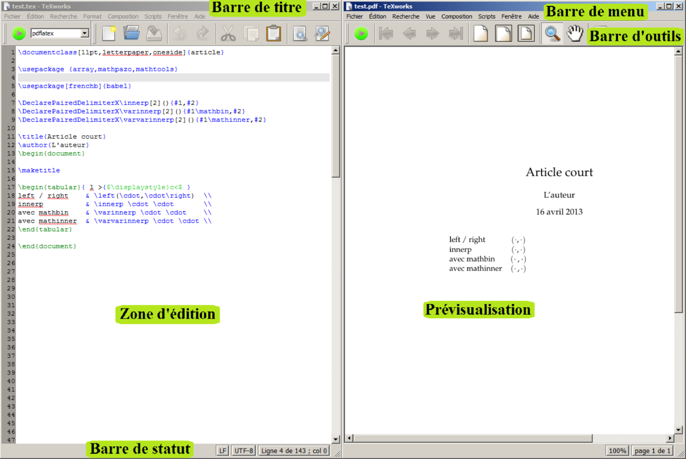
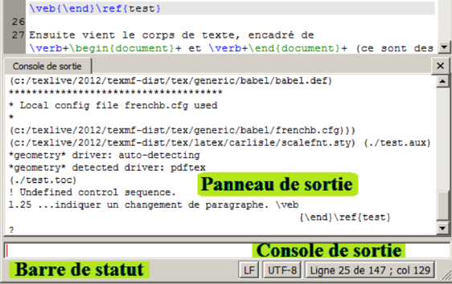
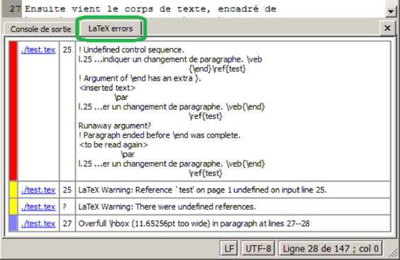

Voyons maintenant comment réaliser un premier document : pour cela on devra le saisir dans la fenêtre d’édition de TEXworks. (LA)TEX n’étant pas des logiciels WYSIWYG 1, vous devrez taper le texte et les instructions de mise en forme et vous ne verrez le résultat qu’après avoir « composé » le texte. Cela paraît austère, mais on s’y fait très vite et on est amplement récompensé par le résultat.
Lorsqu’il s’ouvre l’éditeur présente une interface très dépouillée : une barre de titre, une barre de menu, deux petites barres d’outils, une grande zone (blanche) de saisie et, tout en bas, une barre d’état. Nous sommes dans la fenêtre source/éditeur. Si vous avez déjà composé le document auparavant, le .pdf résultant sera affiché du côté droit dans la fenêtre de prévisualisation.
La première barre d’outils a un bouton pour lancer la composition et une liste déroulante pour choisir le format de composition (nous prendrons pdfLaTeX.) Sachant que le raccourci clavier de la composition est CtrlT (Mac OS X : T) et que l’on ne change pratiquement jamais de format, on pourrait même ne pas afficher cette barre d’outils. De plus le choix peut se faire par le menu Composition.
La deuxième n’offre que des boutons classiques : Nouveau document, Ouvrir, Sauvegarder | Annuler, Répéter | Couper, Copier, Coller | Rechercher, Remplacer.

Même s’ils ne ressemblent pas à de vrais boutons, les zones de la barre de statut peuvent être cliquées. Elles montrent la position actuelle (ligne ou page, respectivement, ouvrent une boîte de dialogue pour indiquer une ligne ou une page à atteindre en cliquant. Les autres zones ouvrent des menus contextuels où on peut changer quelques paramètres.
Comme exemple d’utilisation de TEXworks, nous allons travailler avec LATEX, mais tout autre système TEX est possible. En particulier si vous avez besoin d’une police particulière 2 – imposée par un gabarit officiel, des alphabets non latins, etc. – le système XeTeX est très puissant. 3
Créons maintenant le premier document ! Entrez exactement le texte suivant (intentionnellement en français pour montrer quelques caractéristiques de TEXworks/LATEX.)
Il faut enregistrer le document, en le mettant dans un dossier, que nous créons à cet effet pour les tests (ex. : <home>\TeXworks_exemples) ; le nom du document, par exemple premier.tex, doit avoir une extension .tex.
Ensuite lançons la composition 4 par un clic sur le bouton vert ou par CtrlT (Mac OS X T).
Un panneau s’ouvre entre la zone de saisie et la barre d’état, c’est le panneau de sortie, labellé Log ; y apparaît tout ce que fait LATEX quand il travaille 5. Lorsque LATEX termine ce panneau disparaît (s’il n’y a pas d’erreur) et une nouvelle fenêtre apparaît à côté de la première ; dans cette fenêtre, la Fenêtre de prévisualisation, on peut voir une page avec un titre « Premier document » suivi d’un nom d’auteur « Un TeXnicien », tous les deux centrés, un texte « Voici un texte accentué en français ! » et en bas, au centre, un numéro de page.
Remarquez que dans la vue le curseur de la souris représente une loupe ! Si vous appuyez sur le bouton gauche de la souris vous pourrez voir le texte sous la loupe fortement agrandi (c’est une loupe non !) ; vous pouvez déplacer la loupe et ainsi inspecter le texte en détails.
Pour retourner à la source, il suffit de cliquer dans la fenêtre de celui-ci ou mieux, vous verrez à l’usage, faire Ctrl’ (Mac OS X ’). Ce dernier raccourci est une bascule entre les deux fenêtres. Voyez aussi 5.1 pour vous déplacer automatiquement à un endroit sélectionné de la source vers la vue ou inversement. 6
Analysons maintenant brièvement le résultat pour comprendre ce qu’à fait LATEX et pourquoi. Des introductions et des tutoriels complets peuvent être trouvés sur Internet ; voir par exemple flshort 7 qui doit se trouver dans la distribution LATEX installée ou que l’on peut télécharger du net : faire une recherche sur CTAN 8.
Nous demandons d’abord de créer un document de la classe article, il s’agit de la présentation globale du document.
Ensuite nous signalons que le document d’entrée (la source) est sauvegardé au format Unicode utf-8 et qu’il contiendra donc des caractères qui n’existent pas dans l’ASCII standard sans accents. Nous désirons aussi utiliser un encodage de sortie T1 (l’encodage moderne de TEX) ; nous voulons également un document en A4 et non le format par défaut US letter américain. Enfin nous précisons que la typographie doit suivre les règles françaises en utilisant le module babel 9. Ces instructions générales de travail se font par l’intermédiaire de modules (package, en anglais) appelés avec des options.
Finalement nous terminons la partie déclarative du document, le préambule, en précisant le titre, l’auteur et la date du document, ici nous spécifions sans la date.
Puis vient le corps de texte, entre \begin{document} et \end{document} (ce sont des commandes LATEX). C’est ici que se trouvera tout ce qui doit apparaître dans le document.
Réalisons quelques petites expériences pour montrer l’effet de ces instructions. Pour cela nous mettrons un % devant les instructions ; cela a pour effet de mettre le % et tout ce qui le suit en commentaire, cette partie sera dès lors ignorée par LATEX 10.
Commentez la ligne \usepackage[utf8]{inputenc}, et composez le fichier. Vous devriez voir maintenant que les caractères accentués sont maintenant mal affichés dans la prévisualisation. Si de plus, vous commentez aussi la ligne \usepackage[frenchb]{babel}, LATEX donnera une erreur. Tapez seulement pour continuer la composition.
Après ces expériences, modifions le texte de la façon suivante :
Remarquez que le fait de n’entrer qu’un retour charriot ne crée pas un nouveau paragraphe. En LATEX, on doit insérer une ligne vide pour cela. Dans TEXworks les lignes de la source (à droite de la barre de statut) numérote les lignes créées par un retour charriot, pas les lignes qui passent à la lignes automatiquement.
Lors de la création d’un document pour la composition LATEX, on ne peut manquer de faire des erreurs : oubli d’une accolade fermante ou d’une commande \end{} de fermeture d’un environnement, utilisation de commandes mathématiques sans commande de passage au mode mathématique,... Lors de la compilation, s’il y a une erreur, LATEX s’arrête, en vous permettant de traiter ce problème. Cet arrêt est visible par l’arrêt du défilement des actions dans le panneau de sortie, un message d’erreur y est affiché et LATEX attend une instruction pour savoir ce qu’il doit faire.

On remarque le curseur de saisie dans une ligne entre le panneau de sortie et la barre de statut : la console de sortie ou barre console.
Le message d’erreur est présenté sur plusieurs lignes, comme suit :
LATEX indique qu’il ne reconnaît pas un nom de commande (Undefined control sequence), suggère parfois de voir le manuel ou de taper h (suivi de ) pour de l’aide, indique le numéro de ligne 11 (ici 168) et l’endroit de l’erreur à la coupure de cette ligne (ici à \veb). Enfin par le point d’interrogation indique qu’il attend une action de notre part.
Il y a différentes actions possibles :
Remarquons qu’on peut arrêter la compilation en répétant l’action de lancement : le bouton vert de compilation s’est changé en bouton rouge avec une croix blanche . En cliquant sur ce bouton ou encore par le raccourci CtrlT (Mac OS X T) la compilation LATEX est arrêtée. Le panneau de sortie reste affiché et on peut donc encore y voir le message d’erreur.
Il faut noter que parfois une erreur apparaît longtemps après sa position vraie. Par exemple ouvrir un environnement mais ne pas le refermer, LATEX ne s’en rend compte que lorsqu’il rencontre une autre fin d’environnement sans fermeture du premier. C’est souvent le \end{document} qui montre qu’un autre environnement n’a pas été fermé !
Parfois, une erreur continue d’apparaître dans des compilations successives de (LA)TEX, même après que le document aie été corrigé. Ceci peut survenir parce que (LA)TEX crée un certain nombre de fichiers intermédiaires qui peuvent encore contenir le code original, fautif. Dès lors il est conseillé de supprimer ces fichiers après correction d’erreur. TEXworks fournit une commande pour faciliter cela — voir la section 5.6 .
Après qu’une erreur a eu lieu, le panneau de sortie reste ouvert — même après de compilations successives — pour aider à la correction du problème (qui peut parfois demander plusieurs essais et redémarrage de (LA)TEX. Une fois que tous les problèmes sont résolus, vous pouvez fermer le panneau de sortie par l’option de menu Fenêtre→Masquer la console de sortie. Par ailleurs, vous pouvez aussi configurer le panneau de sortie pour qu’il se ferme automatiquement dès que le processus de composition se termine avec succès en définissant Édition→Préférences...→Composition→Masquer la console de sortie : à Après réussite. Comme on peut facilement passer au dessus d’autres problèmes dans le document (par ex. des références non définies) cela empêche (LA)TEX d’échouer, cette option n’est recommandée qu’aux utilisateurs expérimentés.
Pour vous aider à trouver les erreurs (du moins si vous utilisez LATEX), TEXworks est fourni avec un petit script qui extraie toutes les erreurs, mises en garde et autres messages intéressants de la console de sortie et vous les présente sous une sorme simple de tableau.

Dans ce cas, vous voyez une liste de messages de LATEX, avec les codes colorés et triés par sévérité. Le rouge montre les erreurs, le jaune les mises en garde et le bleu pour les boîtes sur- ou sous-remplies. À côté de la barre de couleur, vous voyez le nom du fichier où se trouve l’erreur. Ensuite, vous voyez le numéro de ligne (si le script a été capable de le déterminer), ainsi qu’un extrait de la console de sortie indiquant quelle était l’erreur. De plus le nom du fichier est un lien qui vous mènera au fichier (et si laligne a pu être déterminée, à la ligne) où LATEX a signalé l’erreur. En espérant que vous pourrez ainsi rapidement corriger les erreurs.
Si vous n’utilisez pas LATEX, ce script pourra être de peu d’utilité, en particulier si la console de sortie est mise en forme de façon différente. Dans ce cas, vous pouvez simplement désactiver le script d’analyse des erreurs (voir la section 6.2 ).
Si la police par défaut de l’éditeur ne nous convient pas, il est possible d’en changer par Format→Police… et choix dans la boîte de dialogue qui s’affiche. Ce changement sera cependant temporaire, on revient à la police par défaut si on ferme TEXworks et qu’on l’ouvre à nouveau.
À partir du menu Composition ou par le menu déroulant de la barre d’outils Composition on peut changer de format de compilation. De nouveau ce changement ne sera que provisoire.
Pour obtenir un changement permanent, il faudra changer les préférences par le menu Édition→Préférences…, puis l’onglet Éditeur pour la police et l’onglet Composition, en bas, pour le format par défaut.